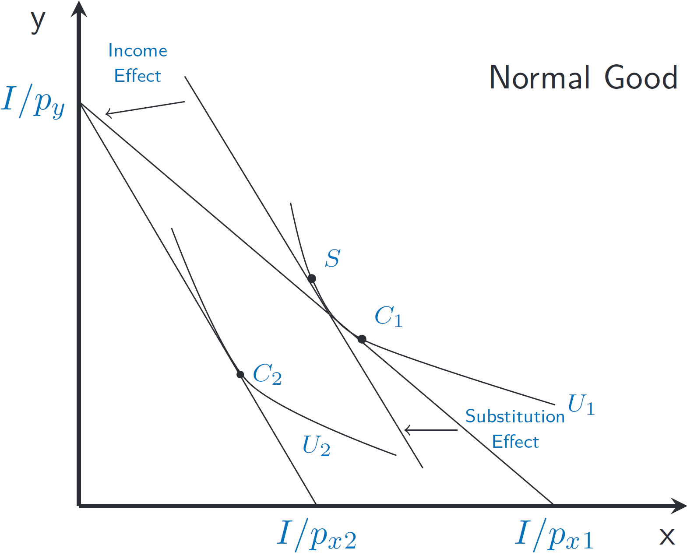
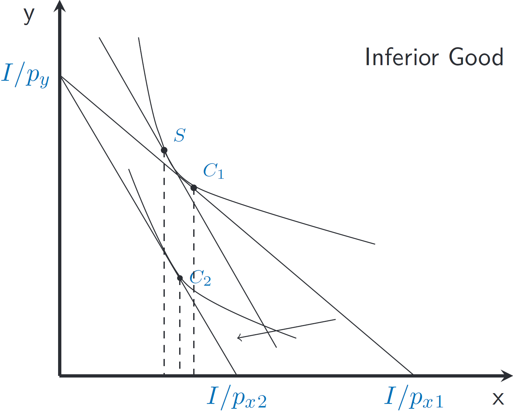
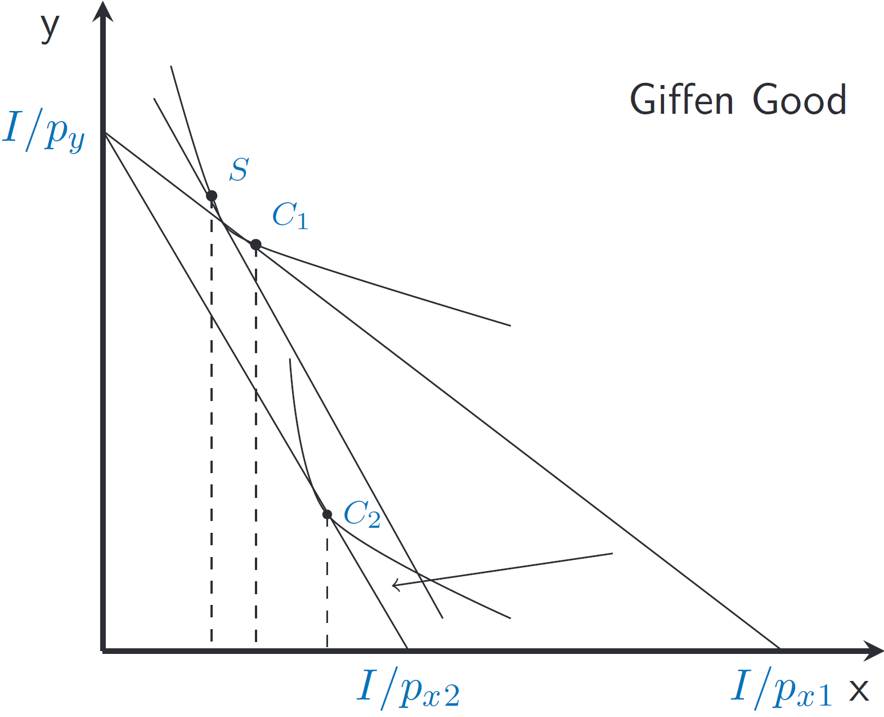
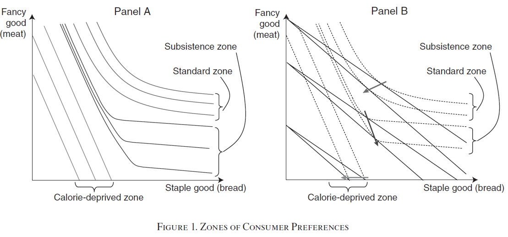
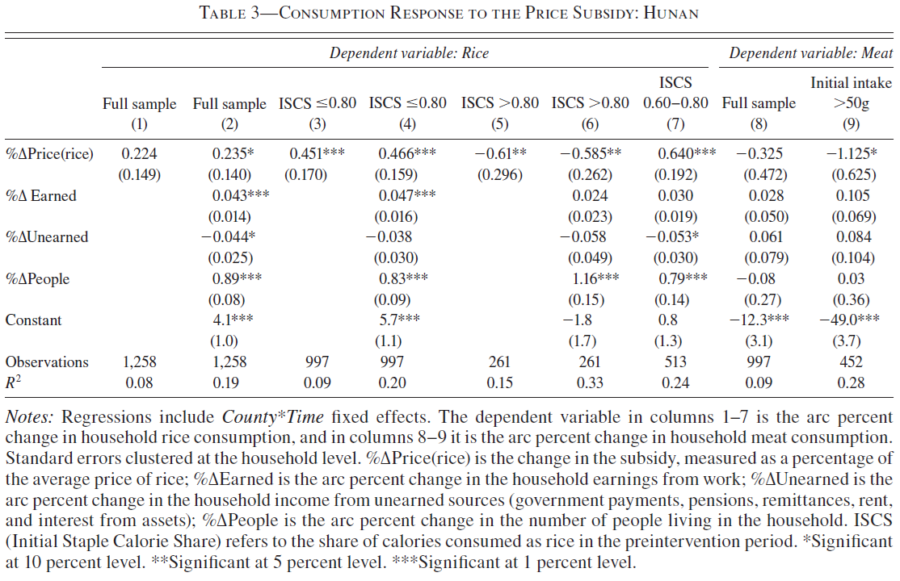
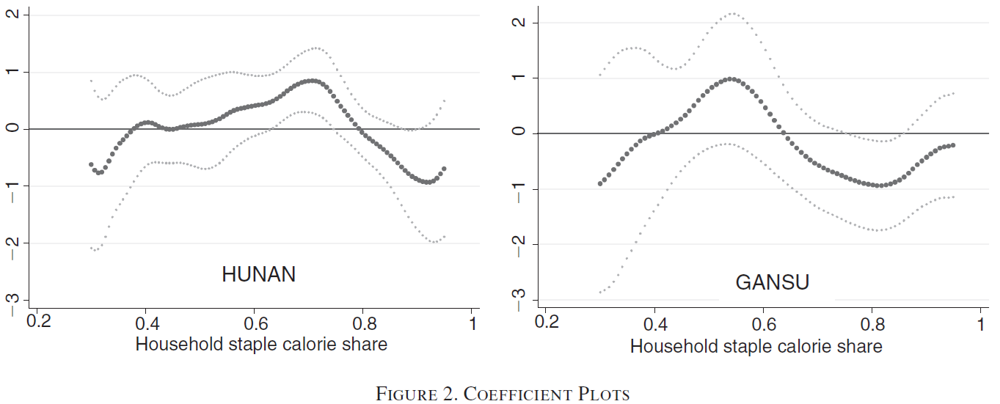
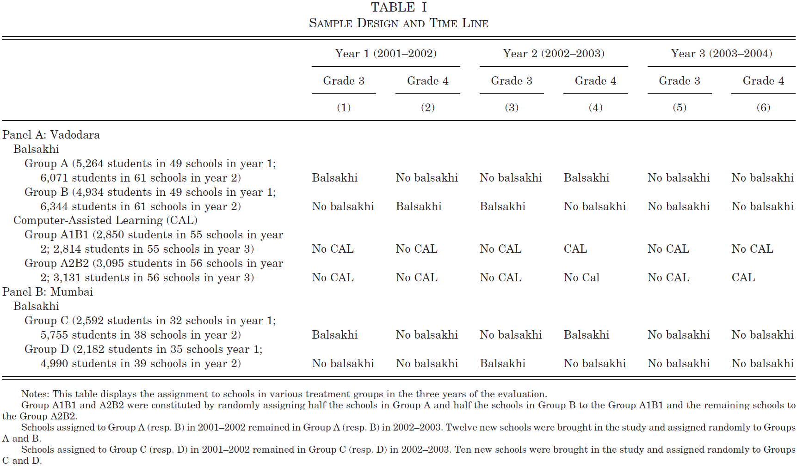
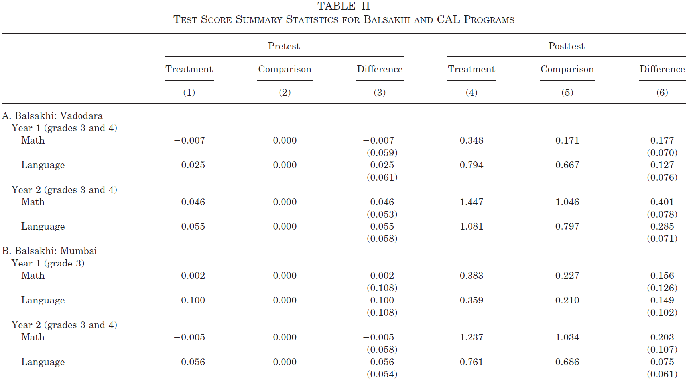
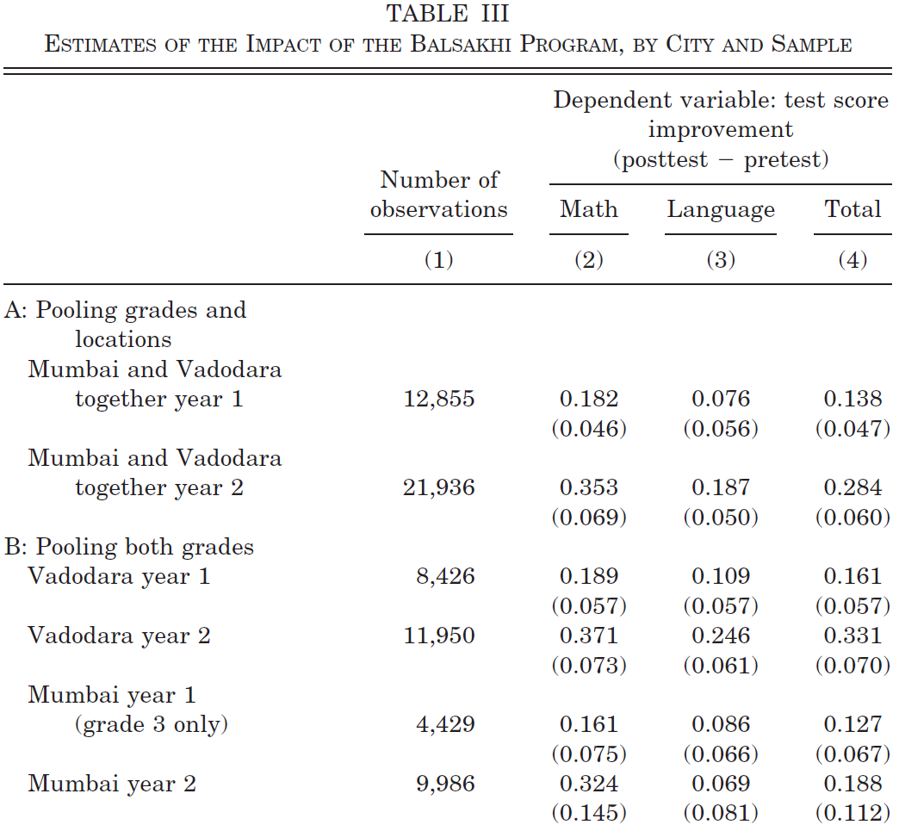

Choices, Inequality and Welfare
University Minor Economics
Wednesday, November 25, 2026
10 Applications to Field Experiments
10.1 Field Experiments in Economics
What Are Field Experiments?
- randomized controlled trials (RCTs)
- often conducted in two rounds: before and after an intervention (treatment)
- subjects randomly assigned into treatment, else into control or comparison group
- before intervention, neither group experiences a treatment
- after intervention, only the treatment group is treated
- randomization allows credible causal inference (RCT as gold standard)
- random assignment makes sure that before treatment, on average both treatment and control group are the same or very closely comparable (in terms of observable data)
- causality claim: any differences across groups between before and after intervention/treatment occurs are DUE TO the treatment
- RCTs are at the base of experimental research in the medical, pharmacological, and social sciences
- field experiment: conducted in naturally occurring economic environments
- lab experiment: conducted under ‘clinical’ or controlled conditions in a laboratory
Economics:
- field experiments can involve households, workers, firms, schools, consumers, farmers, voters, or entire communities
- participants often do not know they are part of an experiment and face real incentives, choices, and constraints
- early roots in agricultural experimentation (randomized field trials in the 1920s)
- during the 1980s and 1990s, John List, and 2021 Nobel laureates David Card, Guido Imbens, and others expanded the use of experimental methods outside laboratories
- 1990s and 2000s: major growth in development economics through randomized evaluations by e.g. Esther Duflo, Abhijit Banerjee, and Michael Kremer (2019 Nobel laureates)
- field experiments are now common in labor, public, development, environmental, education, health, finance, and behavioral economics
Why Are Field Experiments Important?
- randomization easy to understand and to test on observable data
- provide strong evidence on causal effects
- address selection bias that often plagues observational studies
- allow direct testing of economic theories in real-world settings
- generate evidence for policy design and evaluation
- implemented under realistic conditions: high policy relevance
- \(\to\) increasingly used by governments or NGOs for evidence-based policymaking
- but: most of economic research uses observational data, so what are the relative advantages and limitations?
Internal validity
- Randomization makes treatment and control groups comparable on average
- does randomization work? In expectation: \[E[X|D=1]=E[X|D=0]\]
- \(X\) = pre-treatment characteristics
- \(D\) = treatment indicator
- use simple two-sample \(t-\)test to find out whether treated (\(D=1\)) and control units (\(D=0\)) are closely comparable prior to intervention
- large imbalances may indicate implementation problems
- \(\to\) makes causal interpretation more credible
Control
- researchers determine treatment assignment
- setup can be tailored to RQ
Measurement of behavioral responses
- observe actual behavior rather than stated preferences
- real incentives often increase realism
Policy evaluation
- useful for assessing the effectiveness of interventions before scaling them up
External validity
- context often matters substantially
- results from one experiment may not generalize
Cost and logistics
- often expensive and time-consuming
- sometimes small-scale
- require cooperation from organizations, firms, schools, or governments
Ethical concerns
- some interventions cannot be randomized
- denying treatment to control groups may raise concerns
Attrition and non-compliance
- subjects may drop out
- assigned treatment may not always be received
Limited scope
- many important questions (e.g., effects of wars, recessions, tax reforms) cannot be experimentally manipulated
Examples
- Deworming and Education
Miguel, Edward, and Michael Kremer (2004). “Worms: Identifying Impacts on Education and Health in the Presence of Treatment Externalities.” Econometrica, 72(1), 159-217. JSTOR
- School-based deworming substantially improved school attendance. Spillover effects benefited untreated children in nearby schools.
- Performance pay for Teachers
Muralidharan, Karthik, and Venkatesh Sundararaman (2011). “Teacher Performance Pay: Experimental Evidence from India.” Journal of Political Economy, 119(1), 39-77. JSTOR
- Examines whether performance pay improved educational outcomes. Demonstrates that incentive design matters for educational performance: better teacher pay increases student test scores.
- Savings, Pensions, and Commitment Devices
Richard H. Thaler and Shlomo Benartzi (2004): “Save More Tomorrow: Using Behavioral Economics to Increase Employee Saving,” Journal of Political Economy, 112(S1), S164–S187. DOI
- Introduces a behavioral retirement savings program that ties future contribution increases to future pay raises. Finds strong commitment effects and substantially increased pension savings among participants.
- Labor-Market Discrimination
Bertrand, Marianne, and Sendhil Mullainathan (2004): “Are Emily and Greg More Employable than Lakisha and Jamal? A Field Experiment on Labor Market Discrimination,” American Economic Review, 94(4), 991-1013. DOI
- One of the best-known field experiments in labor economics. Identical résumés receive different callback rates depending on whether names were perceived as African-American or White.
Natural Experiments
- many important questions cannot be randomized
- economic inequality
- monetary policy
- immigration shocks
- wars and conflicts
- trade liberalization
- or, randomization is too costly
- use policy reforms (before/after) that have some ‘unexpected’ flavor and affect some and not others (treatment/control)
- tax reforms
- pension or labor market reform
- draft lotteries
- school entry cut-off dates
- borders between jurisdictions
- natural experiment as leading alternative to field experiments in economics
- middle-ground: no actual randomization, but as-good-as randomization
- achieves causal identification while using observational data
- Difference-in-Differences
- compares changes over time in a treated group with changes in a control group
- key assumption: parallel trends in the pre-treatment period
- e.g. employment after minimum wage increase, comparing New Jersey and bordering eastern Pennsylvania; NJ raised its minimum wage rate, while PA kept its rate
- Regression Discontinuity
- exploits treatment threshold/eligibility rule
- compares units just above (treated) and just below (not treated) that threshold
- e.g. scholarships granted only to students with sufficiently high test scores
- among students that score almost the same, the ones that pass the hurdle are lucky, the ones that don’t are unlucky – this is quasi-randomization
- Instrumental Variables
- an instrumental variable offers an external source of variation that affects treatment, but not outcomes directly
- helps investigating the direction of causality
- e.g. distance between home and college makes students more likely go to college and get education (instruments for college choice), without directly affecting post-schooling wage
10.2 Jensen Miller (2008 AER)
Importance of Study
- investigates Giffen goods, or better: Giffen behavior
- this implies demand can be upward-sloping (higher price \(\to\) more consumption) in some specific circumstances
- such behavior is very unusual and typically unobserved
- but: there is no theory to rule it out
- this study makes Giffen behavior observable thanks to experimental price variation
- it provides missing evidence on a prediction that neoclassical economics would make if conditions are right
- findings bolster confidence in economic modeling
- in addition: field experiment that changes (controls) actual prices that households face
- recall: in a market equilibrium, prices are endogenous to demand changes
- randomization uncovers causal channel \(\Delta\)price \(\to\) \(\Delta\)quantity
- in addition: highlights special feature of rational economic choices in severe poverty
Theory of Giffen Goods
- demand functions relate quantities to prices
- empirical regularity: Law of Demand
- higher price \(\to\) lower quantity demanded
- consumer substitutes away from goods that become relatively more expensive
- just focusing on substitution effects: compensated demand
- higher relative price \(\Rightarrow\) lower quantity demanded
- the “Law of Compensated Demand” must hold
- but: there is no theory that requires a downward sloping demand if it is not compensated
- quantity demanded of good \(x\): \(x=D(p_x)\)
- There are two effects on \(x\) from an increase in \(p_x\)
consumers have lower purchasing power, real incomes decrease
\(x\) becomes relatively more expensive compared to other goods, so consumers might substitute away and allocate their money differently
- is called income effect,
- is called substitution effect.
- Income and substitution effects may go in the same, or in the opposite direction.
- shape of indifference curves and/or MRS matters a lot

- income and substitution effects reinforce each other

- income effect in opposite direction to substitution effect

- income effect more than compensates substitution effect
- inferior good
- lower real income may increase demand for a good
- Giffen good: demanded more when its price rises
- good is strongly inferior
- has large budget share in total expenditure
- few direct substitutes
- important distinction:
- Giffen is not a permanent feature of some good
- but rather a characterization of particular consumers in particular circumstances
Evidence
Historical debates and episodes:
- British bread (Giffen/Marshall)
- Irish potatoes during the Great Famine
Modern evidence
- mostly inconclusive
- market-level data create identification problems
- some laboratory evidence exists
Market-Level Tests
Problems:
- prices are endogenous
- supply shocks affect prices
- heterogeneity: different consumers have different elasticities
- positive responses for some households can be hidden by averages
Implication:
- search for Giffen behavior at the household level
Context: China
- China at turn of century characterized by high rates of (extreme) poverty
- those have come down enormously in the past quarter century
- at time of study (early 2000’s) urban poor households had incomes < $1 p.p.p.d.
- nutrition is key
- poor have very simple diet: staple of rice or wheat, and occasionally some “fancy” meat
For very poor households:
- staple provides cheap calories
- fancy food provides taste and variety
- calorie requirements create a subsistence constraint (survival)
When rice becomes more expensive:
- household becomes poorer in real terms
- meat becomes unaffordable
- household cuts meat consumption
- household needs calories
- calories are obtained from additional rice
Result:
- rice consumption rises despite higher price
Three groups:
- Extremely poor (consume almost only rice)
- cannot substitute away from rice
- demand slopes downward
- Poor but not extremely poor
- potential Giffen consumers, demand may slope upward
- Relatively better-off households
- standard downward-sloping demand
Prediction: inverted-U pattern across poverty levels

Setup
Research question:
Can we observe some really poor households increase their staple food consumption when staple prices rise?
Strategy:
- household-level survey data
- randomized price subsidies
- identify causal demand responses
Data:
- about 1,300 households
- Urban China, 2006
- Households lived below local poverty thresholds
- income survey and detailed consumption diary
- differentiate by location
- Hunan province: rice is staple
- Gansu province: wheat is staple
Interviews
- 3 rounds of interviews: April, September, December of 2006
- round 1: pre-intervention interviews (baseline)
- round 2: during subsidization period June-October
- round 3: post-intervention
- intervention caused a price decrease between rounds 1 and 2 and a corresponding increase between rounds 2 and 3
RCT
- intervention: random assignment of staple food vouchers \(\to\) price reduction
- small subsidy (0.10 yuan)
- medium subsidy (0.20 yuan)
- large subsidy (0.30 yuan)
- average pre-intervention price:
- rice in Hunan: 1.2 yuan
- wheat flour in Gansu: 1.04 yuan
- vouchers incrementally disbursed over 5 months
- control group (no vouchers, no subsidy)
features
- resale of vouchers prohibited
- treatment allocated randomly
- treatment status independent of household characteristics
- subsidized households small in number relative to market
Methodology
Main regression: (indexes: \(i\) household, \(t\) round/time)
\[\%\Delta staple_{it}=\alpha + \beta\, \%\Delta p_{it}+ \sum \gamma \%\Delta Z_{it} + \sum \delta (County\times Time)_{it} + \%\Delta \varepsilon_{it}\]
coefficient of interest:
- \(\beta\) as price elasticity
- \(\beta<0\): Law of Demand applies
- \(\beta>0\): Giffen behavior applies
Controls \(Z\):
- earned and unearned income changes
- household composition / HH size changes (demographics, or ‘taste shifters’)
- county × time fixed effects
Notation \(\% \Delta\) signifies so-called arc-percent changes
\[\% \Delta \equiv \frac{x_{t}-x_{t-1}}{0.5\cdot (x_{t}+x_{t-1})} = \frac{\Delta x_{t}}{0.5\cdot (x_{t}+x_{t-1})}\]
similar to, but different from growth rate \[\frac{\Delta_t x_t}{x_{t-1}}\]
advantages of \(\% \Delta\):
- less dependent on base value \(x_{t-1}\) than growth rate
- symmetric for increases and decreases
- works well with large price changes
- close to elasticity interpretation
- county × time fixed effects
- categorical indicators (Jamovi: factor variables), work like a set of dummies
- they absorb:
local economic shocks
food price movements
labor-market conditions
county-specific trends
\(\to\) control for local market price fluctuations and seasonal shocks across rounds
- Identification comes from differences in subsidy intensity within counties and rounds (time)
Results

ICSC: initial staple calorie share
Hunan
For households in the predicted subsistence range:
- price elasticity is positive
- statistically significant
- higher rice prices increase rice consumption
Interpretation:
Strong evidence of Giffen behavior.
Gansu
Evidence is weaker.
Reasons:
- wheat has more substitutes
- households consume little meat
- theoretical conditions for Giffen behavior less clearly satisfied
Results become stronger in theoretically relevant subsamples.
consumer choice diagram strongly suggests that Giffen behavior surfaces only among particular households
- poor enough to struggle for subsistence, yet not so destitute that they can afford only the staple
that is, preferences of such households are different from those of other households
preferences are, however, unobserved
data-driven approach: to test how elasticity changed across poverty levels, interact the arc percent price change \(%\Delta p_{i,t}\) with the household’s initial staple calorie share (a proxy for poverty)
reveals an inverted-U curve or hump shape of \(\beta\) as the sample is changed
- least poor have negative price elasticity
- moderately poor, subsistence-constrained households have negative price elasticity
- extremely poor have negative price elasticity

10.3 Banerjee et al (2007 QJE)
Importance of Study
- authors investigate remedial teaching intervention in India
- Indian educational system has severe deficiencies, and learners do not, on average, attain set educational goals
- despite enrolment having increased rapidly
- learning outcomes remained poor
- many children lagged far behind grade level
- RQ: are there cheap, scalable and effective ways to improve learning results as measured by test scores?
- motivation: target instruction to struggling students
- for a field experiment, the scale is quite large (dataset: 200,000 obs)
- one in a series of contributions of Nobel-prize winning team, following a positive (not normative) approach
- what works and for whom?
- there is no particular theory / economic model being tested
Two Interventions
Implemented in two major cities in West India:
- Vadodara (Baroda)
- Mumbay (Bombay)
Ac years:
- 2001/02
- 2002/03
- 2003/04
- Balsakhi remedial education
- community tutors / teaching assistants
- focus on weak students
- Computer-Assisted Learning (CAL)
- adaptive math software
- individualized practice
Main outcome:
- standardized test scores
- Scores normalized relative to control-group distributions
Tests covered:
- mathematics
- language skills
- pooled

Schools randomized into treatment and control groups.
Important features:
- stratification before assignment
- different grades treated in different schools
- large samples in Mumbai and Vadodara
- clustering of standard errors at school-grade level (different from assignment!)
Did Randomization Work?
- pre-test differences generally very small
- most differences statistically insignificant
- attrition similar across groups
Overall conclusion:
- randomization appears successful

Estimation Results
Core specification:
\[\Delta Score_i = \alpha+\beta Treatment_i+\gamma Pretest_i+u_i\]
Interpretation:
- compares score improvements
- controls for initial achievement
- improves precision

Interpretation
average gains:
- about 0.14 SD in year 1
- about 0.28 SD in year 2
effects strongest for:
- initially weak students
in Mumbai, not all assigned schools received a tutor
excellent example of compliance issues in RCTs
therefore:
- assignment defines intention-to-treat ITT
- assignment used as instrument for actual treatment
- instrumental-variable (IV) estimates the average effect of treatment-on-treated
remedial education mainly benefited:
- low-performing students
Estimated direct effect:
- roughly 0.6 SD for students receiving remedial instruction
Little evidence of spillovers to classmates.
Follow-up results show:
- some decay over time
- positive effects remain for weakest students
- persistence around 0.1 SD one year later
Short-run impacts are larger than medium-run impacts.
Evidence suggests:
- remedial teaching delivers sizeable gains
- strongest for intended target group
- highly cost-effective
targeted instruction outperformed many resource-based interventions
Conclusions
Summary
- field experiments are conducted in naturally occurring economic environments
- they can involve households, workers, firms, schools, consumers, farmers, voters, or entire communities
- core aspect of methodology: randomization into treated (\(D=1\)) and control units (\(D=0\))
- randomization works when, in expectation: \(E[X|D=1]=E[X|D=0]\), i.e., closely comparable prior to intervention
- treatment effect measured as difference in means after intervention
- interpretation: exogenous, randomized treatment causes a difference in outcomes
- Jensen/Miller and Banerjee papers:
- Jensen & Miller: test consumer theory
- Banerjee et al.: evaluate educational interventions
- key takeaways
- extreme poverty can generate unusual economic behavior
- household-level experiments can reveal mechanisms hidden in aggregate data
- treatment effects are often heterogeneous
- policy design should target the constraints faced by poor households

University Minor Economics • Choices, Inequality and Welfare • © 2026-27 Stefan Hochguertel